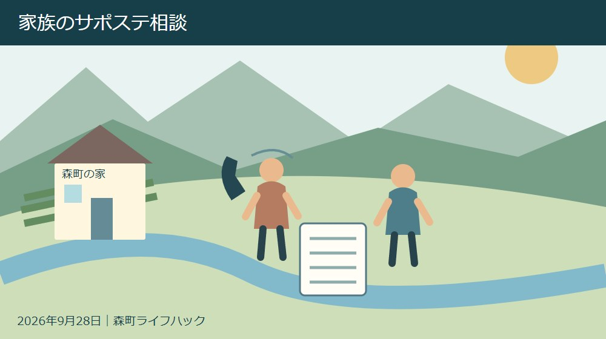
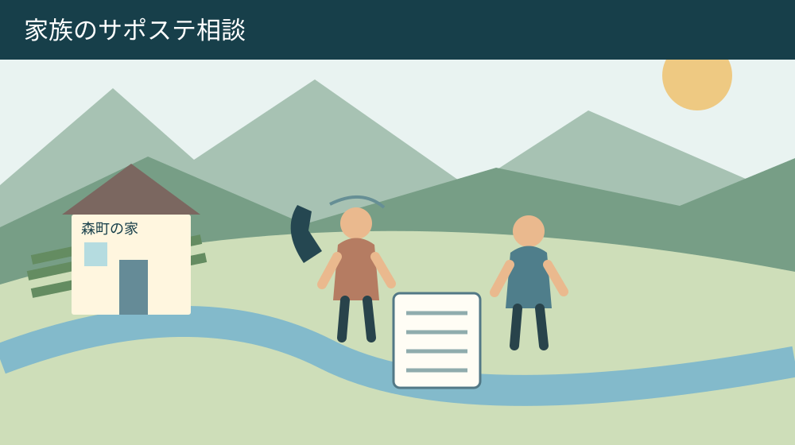
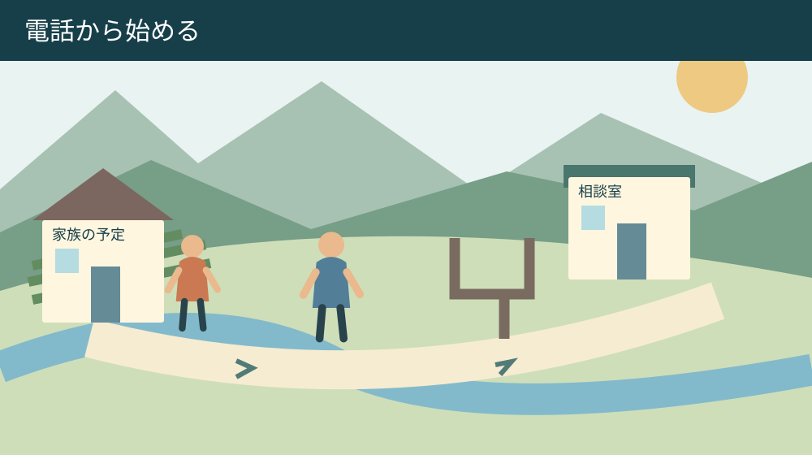

手続き・相談・家族の段取り
森町からのサポステ相談｜家族が使える支援の入口

Q. 本人がまだ動けなくても、家族から相談していい？
A. サポステはままつは15～49歳の本人や保護者等の就労相談を受けています。2026年10月21日の見学・体験会も家族が対象で、申込期限は10月20日です。今日は053-453-8743へ家族から相談できる範囲を確認してください。本人の参加や就職を先に決めず、予約方法と移動の条件を聞くところから始められます。
本人を支える家族にも相談する場所が要る
働くことに不安がある本人を支える家族は、暮らしの支出を考えながら、どこまで声をかけるかにも迷います。森町から相談へ出かけるなら、移動の時間や付き添いの調整も必要です。本人が動けるようになるまで、家族が一人で考え続ける負担を軽く見たくありません。
地域若者サポートステーションはままつ、通称サポステはままつは、本人だけでなく家族も相談の入口に含めています。2026年10月21日には、本人・家族・支援機関の人を対象にした見学・体験会が予定されています。いきなり就職の結論を出す場として捉える必要はありません。
私は大石浩之（磐田市／不動産業）です。この記事は、家族が本人を動かす方法ではなく、森町から使える相談先を確認する案内です。働き方を決める前に、相談できる範囲と移動の段取りが一つ分かれば、今日の前進になると考えます。
森町で暮らしを続けるには、住まいの維持費や通勤手段も無関係ではありません。ただ、家計の不安を理由に本人の就職を急がせれば解決するとは限りません。今日は家族から相談できる範囲を電話で確かめる。その小さな一歩を中心に据えます。
サポステはままつは本人と保護者等の相談を受ける
森町の「サポステ出張相談会」案内を2026年9月28日に確認しました。町は、サポステはままつが15～49歳の人や保護者等から就労の相談を受け、個別相談をもとに本人の状況に合わせた支援方法を考えると説明しています。町本文の更新日は9月17日です。
森町の案内には、キャリアコンサルタントや臨床心理士による個別相談、職場見学・体験、ソーシャル・スキル・トレーニングが掲載されています。相談内容に応じた支援を考える入口であり、電話一本で仕事が決まるという案内ではありません。
町はハローワークをはじめ、保健、医療、福祉、教育、NPO等との連携にも触れています。働くことの不安が、一つの窓口だけで完結しない場合を想定した説明です。家族は悩みを最初から専門分野ごとに整理し切れなくても、何に困っているかを伝える準備ができます。
対象年齢に当てはまるだけで、全てのプログラムを同じ条件で利用できるとは限りません。学生か、仕事をしているか、本人と家族のどちらが相談するかなど、入口によって条件の表現も違います。具体的な状況を電話で伝え、利用できる相談を確かめてください。
10月21日の見学・体験会で確認できる入口
サポステはままつ公式トップページの案内では、見学・体験会は2026年10月21日です。第1部は10時から12時、第2部は13時30分から15時30分。会場はサポステはままつ多目的ルームで、本人、その家族、支援機関の人が対象として示されています。
本人の対象は15～49歳の働いていない人です。家族も対象に明記されていることが、この案内を読む意味になります。本人の参加が決まらないから何も聞けない、と考える前に、家族だけでどの範囲まで参加・相談できるかを運営主体へ確認できます。
申込期間は2026年9月15日から10月20日です。公式ページには電話受付の案内があります。ウェブフォームへのリンクと準備中の表記もあるため、本記事では電話で参加方法を確認する手順を案内します。フォームが使えると推測して手続きを進める説明にはしません。
見学・体験会の連絡先は053-453-8743です。通常の個別相談の予約と、10月21日の参加申込みを混同しないよう、電話の最初に希望する用件を伝えます。第1部と第2部の選び方、家族のみの参加、当日の持ち物は申込み時に確かめてください。
見学・体験会に参加すれば、その場で個別相談ができる、全ての支援を体験できる、というところまでは今回確認していません。当日の詳しい内容や費用、定員、空き状況も電話で確認する事項です。通常相談の条件を、そのまま催しへ移さないようにします。

森町から浜松へ行く前に場所と移動を確かめる
サポステはままつの所在地は、浜松市中央区中央一丁目13-3です。浜松市若者コミュニティプラザ内、浜松市市民協働センター3階と公式サイトに記載されています。見学・体験会は多目的ルームの案内です。建物名と階、会場名を一緒に記録します。
公式サイトの受付時間は9時から18時、面談時間は10時から17時です。休みは土曜、日曜、祝日、年末年始とされています。電話できる時間と面談できる時間は同じではないため、勤務中に連絡する家族は受付時間を確認してから予定を組みます。
森町の自宅からの経路は、出発する地区、利用できる交通手段、本人の外出の負担で変わります。本記事では特定の経路、所要時間、駐車料金を確定していません。車で行く場合も公共交通の場合も、会場への行き方と到着後の入口を事前に確かめます。
見学の時間だけでなく、家を出る時刻、帰りの予定、途中で休む必要を一緒に考える方法を提案します。家族に送迎を頼む場合は、送ることと最後まで付き添うことを分けて話します。本人の希望も聞き、付き添いを当然の条件にしないようにします。
10月21日の予定が合わなければ、見学会に行けないことを支援全体の利用不可と考えないでください。通常相談の入口を電話で確認できます。催しの日程に本人の気持ちを無理に合わせるより、利用方法を一つ聞く方が進みやすい場合もあると私は考えます。
袋井の出張相談は開催年を電話で確認する
森町公式は、町内からも通いやすい会場として、ハローワークプラザ袋井での出張相談を紹介しています。会場はイオン袋井店1階。対象は15～49歳の仕事をしていない人で学生を除き、家族も含むと案内されています。浜松の見学会とは別の催しです。
袋井会場の相談は無料で、一人60分以内、当日受付可・事前電話予約優先と記載されています。家族が予定を立てる材料になりますが、希望時間に必ず相談できるという意味ではありません。森町から出かける前に予約できる時間を確認すると、待ち時間の不確実さを減らせます。
町本文の袋井会場の日付は11月30日とありますが、開催年の明記を確認できませんでした。本記事では今後の確定日程として採用しません。利用したい場合は、053-453-8743へ開催年と日時、会場を問い合わせてから移動を手配してください。
浜松の見学・体験会は2026年の表記を確認できたため、この記事の時期の目安にしています。町ページの更新日が新しいことだけを根拠に、年のない催しの日程を補いません。確認できたことと確認待ちを分けるのは、家族の空振りの移動を防ぐためです。
良い点は本人が動く前にも家族の入口が見えること
サポステの案内の良い点は、家族も対象に書かれていることです。本人の状況を心配しながら声のかけ方に迷う家族にとって、自分が相談してよいか分かるだけでも入口になります。私は、支える側も助言を受けられる仕組みとして、この表示を評価します。
相談だけでなく、職場見学や体験、対人関係を学ぶ支援が示されている点も判断材料です。就職先をすぐ決める一択ではなく、どこから始めるかを相談できます。ただし本人に合うプログラムを、家族やこの記事が先に選び切るものではありません。
森町が浜松の拠点に加えて袋井会場を紹介していることは、移動を考える家族にとって役立ちます。私は、支援の内容と行ける場所の両方が見えることを評価します。開催年など確認が必要な点を押さえれば、場所を比べるための材料になります。
暮らしの支払いにも困りごとがある場合は、森町の生活の相談窓口の記事が別の入口です。森町公式の「暮らしの相談窓口」にも、年金や法律等の相談が分かれて掲載されています。就労と家計を一つの窓口で全て解決すると考えず、相談を分けられます。
注文したい点は家族だけでできる範囲の説明
サポステの案内に家族が対象とあっても、本人の同席が必要な場面や、家族のみで聞ける内容の範囲までは、今回の資料だけで確定できません。私は、初めて電話する家族が質問しやすい案内を望みます。家族が対象という一文を、実際に使える入口へつなげたいからです。
本人のことを相談する際には、本人が知っていること、家族が見たこと、家族の推測を分ける必要があります。「働く気がない」と評価だけを伝えると、何が困難なのかが見えません。生活の中で困っている場面と、家族が今知りたいことを別に書く方法を提案します。
私は、家族だけで先に相談することがよい場合と、本人に話してからの方がよい場合を、この記事だけでは選べません。関係性や本人の意向で違うからです。その迷いも含めて「本人へどう伝えてから相談すればよいか」と窓口へ質問できます。
支援の利用を家族が決め、本人には予定だけを伝える方法は勧めません。本人がまだ決めない余地を残すことと、家族が情報を集めることは両立します。今日の一歩を電話で範囲を聞くところに絞れば、参加や就職を一度に決めなくて済みます。

対案・結論：電話の最初の一文を用意する
森町からサポステへ相談したい家族は、まず053-453-8743へ、家族から相談できる範囲を確認します。「森町に住む家族について、働くことの相談先を探しています。本人の参加はまだ決まっていません」と用件を短く伝える方法があります。
電話で確認するのは、本人の年齢と就労・在学状況を踏まえた利用条件、家族のみの相談方法、予約の取り方、相談会場です。本人の詳しい個人情報を最初から全て話す必要があるかは、窓口に尋ねます。必要な情報の範囲を先に聞けます。
10月21日の見学・体験会を希望する場合は、通常の面談予約とは別にイベント名を伝えます。第1部と第2部、家族だけの参加、申込期限、当日の内容を確認します。申込期限は10月20日ですが、空き状況があると断定せず、受付状況も尋ねてください。
電話がつながったら、相談した日、担当者から案内された次の連絡方法、持参するもの、予約の日時を残します。家族が聞いた助言を本人に伝える際は、自分の意見を混ぜず、窓口の説明と家族の希望を分けて話せるようにします。
電話した日に参加を決めなくても構いません。予約や申込みをした場合は変更方法も確認します。本人の気持ちや体調が変わったとき、無断で行かない状態を避けるための準備です。支援を使い始める前から、予定を変えられる手順を知っておけます。
家計と住まいの話は就労相談と分けて残す
就労の相談を考える家族には、生活費、住まいの維持費、年金保険料等の不安もあるかもしれません。全ての読者が困窮していると決め付けず、該当するものだけ整理します。本人の仕事の相談と、今月の支払いの相談は、目的を分けて進められます。
国民年金の支払いに悩む場合は、国民年金の免除と納付猶予の記事で制度の違いを確認できます。サポステへの相談をしただけで保険料の手続きが済むわけではありません。申請と審査は年金の窓口で確認する別の段取りです。
住まいを所有する家族なら、家の修繕や今後の維持を誰が担うかも気になると思います。ただ、就職が決まらないことだけを理由に、本人へ家の売却や転居を迫る結論にはつなげません。住まいの資料整理と本人の働き方は、別の相談として扱えます。
家族が書く相談メモの作り方は、困りごとを一枚に整理する記事も参考になります。日時と事実、困っていること、希望する支援を分ける方法です。サポステの相談を行政相談へ送るという意味ではなく、伝える内容の整理に使います。
家族が共有する記録にも本人の意思を残す
サポステへの連絡記録は、本人が希望したこと、家族が確認したこと、まだ決めていないことを三つに分けます。本人の知らないところで、就職先や参加日が決まったような記録を作らないためです。相談しただけの段階を、利用開始と書かないようにします。
家族間で共有する場合は、誰まで伝えてよいかを考えます。親戚全員に相談内容を送る必要はありません。本人の状況を心配する気持ちがあっても、共有範囲を広げすぎると説明の負担が増えます。必要な連絡先と予約情報から絞って残します。
移動を担当する家族が別の場合は、会場、日時、本人の希望する付き添いの範囲を共有します。相談の中身まで送迎担当へ伝える必要があるかは別です。家族の役割を分けることが、そのまま個人情報を全て共有する理由にはなりません。
相談後に次の提案を受けたら、本人が考える時間と、再連絡の予定を確かめます。返事を保留することと、連絡を忘れることは違います。私は、決めるまでの時間を残しながら、必要な連絡は止めない形が、家族にも本人にも無理が少ないと考えます。
大石の視点：相談できたことを成果にする
私は、働くことの相談をした日に就職の結論まで求めなくてよいと考えます。相談先が一つ分かり、家族だけで話せる範囲が分かる。それを今日の成果にします。本人を動かす道具として支援制度を使うより、選ぶための材料を増やしたいからです。
私なら、電話の前に紙へ「家族が困っていること」と「本人の希望として確認できたこと」を別々に書きます。これは実際の相談を再現した体験談ではなく、私の意見です。二つを分けると、家族の願いを本人の答えとして話してしまうことを避けられます。
森町から浜松へ出かけるには、移動と予定の調整が要ります。支援があるのだから使えばよい、と外から言うだけでは、その負担が抜け落ちます。私は、電話で確認してから出かける順番にすることで、家族が無駄足を踏む可能性を減らしたいと思います。
10月21日の見学・体験会は、家族も対象となる入口です。参加を急がせず、まず家族から相談できる範囲を053-453-8743へ確認する。本人がまだ決めない自由を残したまま、家族も一人で抱え続けない方法を探せます。
よくある質問
森町からサポステはままつを利用する家族向けに、相談前の疑問を整理します。見学・体験会、通常の個別相談、袋井の出張相談はそれぞれ条件が異なるため、電話では希望する相談の名称を伝えてください。
本人が行くと決めていなくても家族から相談できますか？
森町公式の案内では、サポステはままつは15～49歳の本人や保護者等から就労の相談を受けています。10月21日の見学・体験会も家族を対象に含みます。ただし家族だけで利用できる範囲や本人への伝え方は個別に確認が必要です。053-453-8743へ、本人の参加が未定であることを伝えて問い合わせてください。
2026年10月21日の見学・体験会はいつ申し込みますか？
公式案内の申込期間は2026年9月15日～10月20日です。第1部は10～12時、第2部は13時30分～15時30分、会場はサポステはままつ多目的ルームです。電話で受付状況、部の選び方、家族のみの参加、持ち物等を確認してください。通常面談の予約とは分けて、見学・体験会への申込みと伝えます。
森町から袋井の出張相談へ行くこともできますか？
森町はハローワークプラザ袋井の出張相談を紹介しています。家族も対象で無料、一人60分以内、当日受付可・電話予約優先の案内です。ただし本文の11月30日には開催年の明記がなく、本記事では次回日程として確定していません。出かける前にサポステはままつへ開催年、日時、会場と予約方法を確認してください。
公式情報源
2026年9月28日確認。制度・金額・日程は変更される場合があります。個別の適用は担当窓口へ、融資や医療などの専門判断は各専門機関へ確認してください。